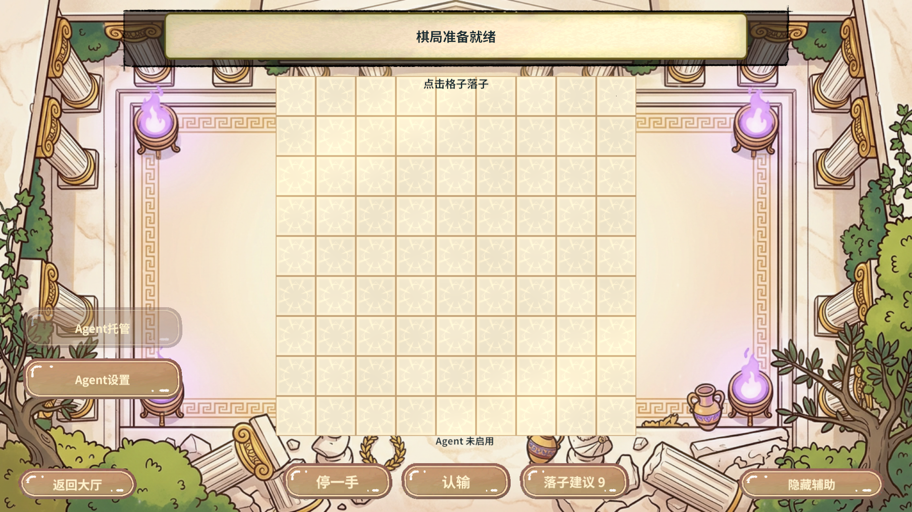
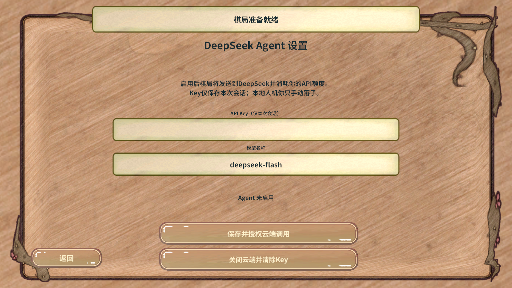

结论与证据范围
统一落子、本地人机、真实LAN双端Agent、KCP匹配托管、设置UI与清理通过。
HTTP使用开发态固定响应；规则、时钟、UTP/KCP传输及棋谱提交保持真实实现。未提供真实DeepSeek Key，因此未验证付费API、延迟、额度消耗或棋力提升；没有将替身结果描述为模型成功。
| 验证 | 结果 |
|---|
| Unity / 服务端编译 | Unity最终0 Error；服务端dotnet build 0 Warning / 0 Error。 |
| 离线服务检查 | 原有27项计时/状态断言通过；Agent闭环、空棋局拒绝、控制权限、取消、非法输出、本地回退、快照隔离、心跳Busy保护通过。离线Json使用System.Text.Json，运行期另以Unity JsonUtility复核。 |
| LAN真实双端 | 17项业务断言通过，最终序号7，双方指纹4197133139454110410；提子1，黑方胜，双方端点清理。 |
| KCP服务器匹配 | 真实本机UDP20000匹配，开启本方Agent后自动双停及确认；双方最终序号4、指纹16135205612020234472；停止托管与finally清理通过。 |
| 冷AB / 设置UI | abMode=true；等待过场淡出，设置模型控件可见；真实点击保存空Key被拒绝；零新增Error。 |
| AB依赖 | canBuild=true，errors/shared/circular/mapErrors均空；仍存在既有资源大小写命名建议。 |
如何使用
九路围棋模式选择页或对局左侧 → Agent设置 → 填写API Key和模型（默认deepseek-flash）→ 保存并授权云端调用。Key仅本次运行持有，关闭云端会清除。人机玩家手动执黑、云端自动执白；服务器和局域网对局可在面板开启/停止Agent托管，仅控制本方座位。
请求异常本手回退本地策略，不无限重试。计时照常；模型只能从合法候选选落点或停一手。数子接受当前方案，玩家可恢复对弈；模型没有认输、超时或断线判定权限。
实际MCP调用顺序
常驻stdio连接目标工程 → rev_discover(editor/status) → rev_call(editor.status/scene.list) → 脚本导入与编译后重新rev_discover → rev_call(game.pvp.agent-assets) → 字库生成、资源配置、ab.issues与项目正式AB构建 → rev_call(editor.play/runtime.start) → rev_discover(game/pvp.*) → rev_run(人机/LAN、KCP托管、设置UI、最终规则计划) → 每份计划finally清理并返回大厅 → editor.stop恢复编辑态。
本轮没有调用GM目标的rev_call；运行时用真实注册的game能力。首次错误参数args被schema拒绝后改为arguments，不把拒绝调用记作已执行业务。
发现并修复
- LAN双方同时确认数子导致同序号分叉：自动确认固定黑先白后，复测双方指纹一致。
- 首次设置使用同步Open被真实AB拒绝：改用回调式异步入口，并检查迟到回调的PVP流程归属。
- Fantasy心跳短暂Busy：等待通道而保留模型请求，避免反复取消及重复计费。
- 未开局提交提前访问棋局：增加明确拒绝并补规则断言。
- 匿名测试回执被Unity序列化为空：改字典；补齐启动/过场等待和InputField真实查询路径。
失败的完整机器记录留在忽略目录.codex/work/pvp-agent，不生成ZIP或Profiler录制。
框架可行性
RevLogic/既有PVP域负责推进与退出，RevServices持有服务，RevUI负责异步开屏与绑定，原有RevTimer和RevPool继续管理表现。HTTP采用Unity异步操作并复用域Tick轮询，未新增Task/线程/异步框架，无需修改Revolution内核。Fantasy沿用既有KCP消息与池化回执，不发送Key、不改协议。结论覆盖Windows Editor与真实PC AB，不延伸为移动端/WebGL或专业棋力结论。
真实设置与对局画面

